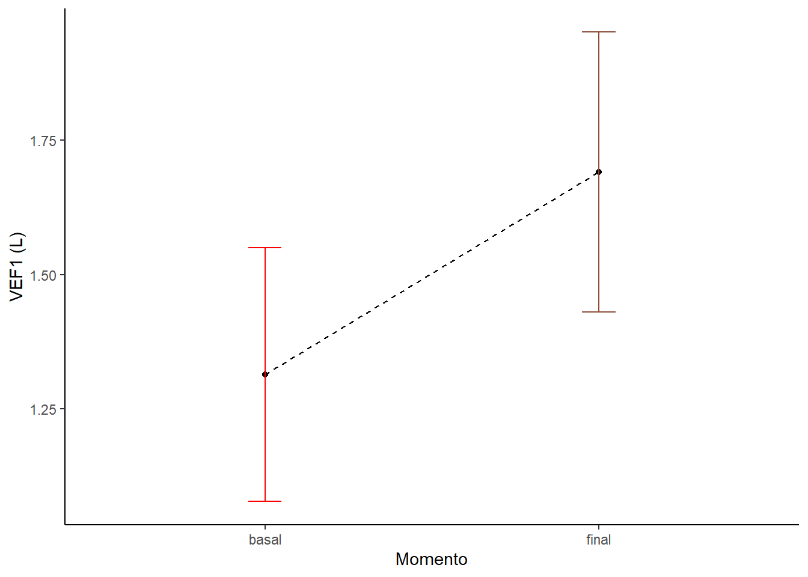

Capítulo 13 Teste de Hipóteses
O Teste de hipóteses é um dos procedimentos básicos para a inferência estatística. Em um teste de hipóteses, testa-se uma teoria ou crença sobre um parâmetro populacional.
Quase sempre, as informações são obtidas a partir de uma amostra em função da quase impossibilidade de se conseguir trabalhar com toda a população. Portanto, extrapolar ou estender os resultados, obtidos de uma amostra, para a população, significa aceitá-los como representações adequadas da mesma.
Sabe-se que as estimativas amostrais diferem dos valores reais (populacionais) e o objetivo dos testes de hipóteses é estabelecer a probabilidade de essa diferença ser explicada pelo acaso.
13.2 Dados
Considere o exemplo de uma turma de 40 alunos de Bioestatística, onde metade dos alunos são do sexo feminino. Como tem sido a regra, a minha hipótese é que o desempenho das mulheres continuará a ser superior. Vamos usar o banco de dados dadosNotas.xlsx.
Para baixar o banco de dados, clique aqui. Salve o mesmo no seu diretório de trabalho.
13.3 Leitura e manipulação do banco de dados
Crie o objeto dados para receber o arquivo, a partir do diretório de trabalho.
dados <- read_excel("C:/Users/petro/Dropbox/Git_repositório/Arquivos/dadosNotas.xlsx")A função read_excel() do pacote readxl abre o arquivo e podemos ver a sua estrutura, usando a função glimpse () do pacote dplyr.
glimpse (dados)## Rows: 40
## Columns: 2
## $ notas <dbl> 63.1, 76.3, 57.7, 66.9, 73.1, 70.3, 63.6, 75.7, 73.5, 83.0, 73.0…
## $ sexo <chr> "F", "F", "F", "F", "F", "F", "F", "F", "F", "F", "F", "F", "F",…13.3.1 Amostra
Este banco de dados será a nossa amostra. A partir dela faremos inferência a população de alunos da disciplina de Bioestatística do curso de Medicina
Como a variável sexo está como caractere, é melhor transformá-la para fator:
dados$sexo <- as.factor(dados$sexo)
glimpse(dados)## Rows: 40
## Columns: 2
## $ notas <dbl> 63.1, 76.3, 57.7, 66.9, 73.1, 70.3, 63.6, 75.7, 73.5, 83.0, 73.0…
## $ sexo <fct> F, F, F, F, F, F, F, F, F, F, F, F, F, F, F, F, F, F, F, F, M, M…13.3.2 Sumarização dos dados na amostra
As principais medidas resumidoras serão colocadas no objeto resumo:
resumo <- dados %>%
group_by(sexo) %>%
summarise(n = n (),
media = mean(notas),
dp = sd (notas),
mediana = median (notas),
IIQ = IQR (notas)) %>%
mutate(ep = dp/sqrt(n)) %>%
mutate(me = ep * qt(1 - (0.05/2), n - 1))
resumo## # A tibble: 2 × 8
## sexo n media dp mediana IIQ ep me
## <fct> <int> <dbl> <dbl> <dbl> <dbl> <dbl> <dbl>
## 1 F 20 68.4 7.79 68.6 10.6 1.74 3.65
## 2 M 20 59.9 7.34 59.2 9.20 1.64 3.43Assim, temos uma amostra, onde nota média das mulheres foi 68.4 e dos homens 59.9. Aparentemente, a afirmação de que as mulheres têm um melhor desempenho na prova de Bioestatística, parece fazer sentido. Como não se sabe o que ocorre na população, esta diferença de 8.5 pode ter ocorrido por acaso e pode não existir!
13.4 Hipótese nula e alternativa
No teste de hipóteses (TH), existem dois tipos de hipóteses, definidas como:
Hipótese nula (\(H_{0}\)): é a hipótese que afirma não existir diferença e que a diferença observada é atribuível ao acaso. É a hipótese a ser testada, aquela que se busca afastar. É escrita como:
\[ H_0: μ_1=μ_2 \ ou \ μ_1-μ_2=0 \] Hipótese alternativa (\(H_{A}\)): é a hipótese contrária, como o nome diz, alternativa à \(H_0\). Representa a posição de uma nova perspectiva, a conclusão que será apoiada se \(H_0\) for rejeitada. Ela supõe que realmente exista uma diferença entre os grupos. É a hipótese que o pesquisador pretende comprovar. É escrita, em geral, simplesmente como havendo uma diferença entre os grupos, sem indicar uma direção, hipótese bilateral ou bicaudal:
\[ H_0: μ_1≠μ_2 \ ou \ μ_1-μ_2≠0 \] Ou, se houver uma suspeita, através de um conhecimento prévio, apontar uma direção para a diferença, ou seja, usar uma hipótese unilateral ou monocaudal:
1. \(\mu_1>\mu_2\)
\[ H_0: μ_1>μ_2 \ ou \ μ_1-μ_2>0\\ \] Neste caso, a \(H_0\) passa a ser:
\[ H_0: μ_1 \le μ_2 \] 2.\(\mu_1<\mu_2\)
\[ H_0: μ_1<μ_2 \ ou \ μ_1-μ_2<0 \] Aqui, a \(H_0\) passa a ser:
\[ H_0: μ_1 \ge μ_2 \]
A \(H_0\) e \(H_A\) são opostas e mutuamente exclusivas. No TH, calcula-se a probabilidade de obter os resultados encontrados, caso não haja efeito na população, ou seja, caso a \(H_0\) seja verdadeira. Portanto, o TH é um teste de significância para a \(H_0\).
Considere o exemplo das notas de Bioestatística, conforme o sexo. As hipóteses seriam escritas da seguinte maneira, considerando uma \(H_A\) monocaudal:
\[ H_0: μ_{mulheres} \le μ_{homens} \\ H_A: μ_{mulheres} > μ_{homens} \]
13.5 Regra de decisão
O objetivo do TH é rejeitar ou não a \(H_0\), partindo do pressuposto de que ela é verdadeira. Portanto, é fundamental estabelecer uma regra de decisão que permita uma declaração em relação à \(H_0\).
Essa regra de decisão cria duas regiões, uma região de rejeição e uma região de não rejeição da \(H_0\), demarcadas por um valor crítico. Este valor de referência é determinado pelo nível de significância, \(\alpha\), e deve ser claramente mencionado antes de se iniciar a pesquisa, pois é baseado nele que se fundamentam as conclusões da mesma.
O nível de significância corresponde a probabilidade de rejeitar uma hipótese nula verdadeira. Quando a hipótese alternativa não tem uma direção definida, a área de incerteza, \(\alpha\), é colocada nas duas caudas, dividindo a probabilidade (\(\alpha/2\)); quando houver indicação prévia de um sentido, a área de rejeição ficará a direita ou a esquerda dependendo da direção escolhida. No exemplo dos notas dos alunos de Bioestatística, a área escolhida está à direita.
Para verificar se as notas, na média, das mulheres são maiores do que as dos homens, vamos usar \(\alpha = 0,05\) e uma \(H_A\) monocaudal. Desta forma, usando a função qt(), com um p = 0.95 e gl = n1 + n2 - 2 = 20 + 20 - 2 = 38.
tc <- qt(0.95, 38)
round (tc,3)## [1] 1.686Se o teste estatístico retornar um valor t > \(t_{crítico}\), ou seja, à direita da linha tracejada azul, na figura abaixo, rejeitaremos a \(H_0\) e concluiremos que as mulheres têm um melhor desempenho.
13.6 Erro tipo I e Erro Tipo II
Quando se toma uma decisão existe a possibilidade de se cometer erros. Um erro, denominado de erro tipo I, ocorre quando, baseado na regra de decisão escolhida, uma \(H_0\) verdadeira é rejeitada.
Nesse caso, tem-se um resultado falso positivo. Há uma conclusão de que existe um efeito quando na verdade ele não existe. A probabilidade de cometer esse tipo de erro é \(\alpha\), o mesmo usado como nível de significância no estabelecimento da regra de decisão.
\[ P(rejeitar \ H_0│H_0 \ verdadeira)=\alpha \]
Qual o valor de \(\alpha\) que pode representar forte evidencia contra \(H_0\), reduzindo a possibilidade de erro tipo I?
O valor de α escolhido, apesar de arbitrário, deve corresponder a importância do que se pretende demonstrar, quanto mais importante, menor deve ser o valor de \(\alpha\). Nesses casos, não se quer rejeitar incorretamente \(H_0\) mais de 5% das vezes. Isso corresponde ao nível de significância mais usado de 0,05 (\(\alpha\) = 0,05). Em algumas situações também são utilizados 0,01 e 0,10.
Existe uma outra possibilidade de erro, denominado de erro tipo II, que ocorre quando a \(H_0\) é realmente falsa, mas com base na regra de decisão escolhida, não se rejeita essa hipótese nula. Nesse caso, o resultado é um falso negativo; não se conseguiu encontrar um efeito que realmente existe. A probabilidade de cometer esse tipo de erro é chamada de \(\beta\).
\[ P(não \ rejeitar \ H_0│H_0 \ falsa)= \beta \]
Na construção de um teste de hipótese, o erro tipo II é considerado menos grave que o erro tipo I. Entretanto, ele também é importante. Tradicionalmente, adota-se o limite de 0,10 a 0,20 para o erro tipo II. O Quadro abaixo resume as consequências possíveis na tomada de decisão em um teste de hipótese.
\(~\)
\(~\)
13.7 Teste estatístico
O teste estatístico é usado para saber se a média obtida através de uma amostra se afasta de forma significativa da média populacional. Para isso é usado o erro padrão da média {\(\sigma_\overline{x}\) que padroniza essa diferença em números de erros padrão. O teste estatístico é escolhido em função das características dos dados e objetivo do estudo. No exemplo, do desempenho dos alunos na disciplina de Bioestatística de acordo com o sexo, estamos comparando duas médias e o teste indicado é o teste t para amostras independentes.
13.7.1 Pressupostos do teste
13.7.1.1 Avaliar a normalidade dos dados
Vamos usar o teste de Shapiro-Wilk dentro da função by():
by (data = dados$notas,
INDICES = dados$sexo,
FUN = shapiro.test) ## dados$sexo: F
##
## Shapiro-Wilk normality test
##
## data: dd[x, ]
## W = 0.97277, p-value = 0.812
##
## ------------------------------------------------------------
## dados$sexo: M
##
## Shapiro-Wilk normality test
##
## data: dd[x, ]
## W = 0.97229, p-value = 0.8024Os valores P são > 0,05 e, portanto, não rejeitamos a \(H_0\) e declaramos que os dados, tanto das mulheres como dos homens se ajustam à distribuição normal.
13.7.1.2 Verificação da igualdade das variâncias
Usaremos o teste de Levene com a função leveneTest() do pacote car:
levene <- leveneTest (notas~sexo, center = mean, data = dados)
levene## Levene's Test for Homogeneity of Variance (center = mean)
## Df F value Pr(>F)
## group 1 0.4575 0.5029
## 38O Teste de Levene retorna um valor P > 0,05, significando que não é possível rejeitar a igualdade das variâncias.
13.7.2 Cálculo do teste estatístico
Como os pressupostos básicos do teste foram atendidos, usamos a função t.test() que tem os seguintes argumentos:
t <- t.test(notas ~ sexo,
data = dados,
alternative = "greater",
paired = FALSE,
conf.level = 0.95,
var.equal=TRUE)
t##
## Two Sample t-test
##
## data: notas by sexo
## t = 3.5586, df = 38, p-value = 0.0005101
## alternative hypothesis: true difference in means between group F and group M is greater than 0
## 95 percent confidence interval:
## 4.480894 Inf
## sample estimates:
## mean in group F mean in group M
## 68.380 59.865- t é o valor estatístico do teste t,
- df são os graus de liberdade ,
- p-value é o valor P do teste t.
- conf.int é o IC95% da diferença média;
- sample estimates são o valores médios das populações 1 e 2.
13.7.3 Conclusão
Conclui-se, portanto, que o desempenho das mulheres na disciplina de Bioestatística é superior ao dos homens , a diferença (8.5) encontrada é estatisticamente significativa (t = 3.5586, gl = 38, P = \(5.1013737\times 10^{-4}\), com uma confiança de 95%.
13.7.4 Apresentação gráfica dos resultados
Podemos exibir o gráfico da diferença média, descrito por Gardner-Altman, em 1986 (BMJ. 292(6522):746–750), usando o pacote dabestr com as funções dabest (), mean_diff () e plot ()com um objeto dabest_effsize (mean_diff, por exemplo). Para detalhes consulte dabestr.
dois.grupos <-
dados %>%
dabest(sexo, notas,
idx = c("M", "F"),
paired = FALSE)
difMedia <- mean_diff(dois.grupos, ci = 95)
plot(difMedia,
color.column = sexo,
palette = c("pink4", "salmon3"),
show.legend = F,
rawplot.ylabel = "Nota em Bioestatística",
effsize.ylabel = "Diferença Média")
13.8 Poder do teste estatístico
Considera-se poder do teste estatístico a probabilidade de o teste rejeitar uma \(H_0\) quando ela é realmente falsa. Corresponde, na Figura abaixo, a região à direita da linha vertical azul, isto é, a área de rejeição da \(H_0\), para um teste monocaudal à direita e é igual a:
\[ Poder = 1 - \beta \]
\(~\)
\(~\)
13.8.1 Cálculo do Poder usando a distribuição t
A função pwr.t.test() do pacote pwr permite fazer o cálculo do pode, usando os seguintes argumentos:
| Argumento | Significado |
|---|---|
| n | número de observações (por grupo); |
| d | tamanho do efeito (d de Cohen); |
| sig.level | nível de significância (\(\alpha\)); |
| power | poder do teste; |
| type | “one.sample”, “two.sample” ou “paired”; |
| alternative | “two.sided”, “less”, “greater”. |
Um dos parâmetros n, d, power, sd e sig.level deve ser escrito como NULL e esse parâmetro é determinado a partir dos outros.
Para calcular poder, precisamos do d de Cohen que pode ser calculado usando a função cohensD () do pacote lsr. Para maiores informações sobre d de Cohen, veja aqui.
d <- cohensD (notas ~ sexo, data = dados)
d## [1] 1.125339Um tamanho de efeito pequeno tem um d ao redor de 0.2, um d médio está em torno de 0.5 e um d grande está \(\ge\) 0.8.
poder <- pwr.t.test(n = 20,
d=d,
sig.level=0.05,
power = NULL,
type="two.sample",
alternative="greater")
poder##
## Two-sample t test power calculation
##
## n = 20
## d = 1.125339
## sig.level = 0.05
## power = 0.9677976
## alternative = greater
##
## NOTE: n is number in *each* groupO poder do teste rejeitar uma \(H_0\) falsa é igual a 96.8%.Na pratica, em geral, quando se calcula o tamanho amostral usamos um poder entre 80 a 90%, o que significa um erro \(\beta\) de 10 a 20$.
13.9 Valor P
Foi mostrado no TH um procedimento onde encontramos o valor da probabilidade que pode ser usada como critério para rejeitar ou não a hipótese nula. Este ponto crítico, fixado, pelo pesquisador, no início da pesquisa, é o nível de significância, \(\alpha\). Essa abordagem do valor de probabilidade é, com frequência, chamada de abordagem através do valor P. Uma vez realizada a pesquisa, o pesquisador calcula a probabilidade de obter um resultado tão ou mais extremo que o observado, uma vez que a \(H_0\) seja verdadeira que é o valor P. O valor P também é conhecido como nível descritivo do teste. O objetivo de um teste estatístico é transformar em probabilidade a magnitude do desvio verificado em relação ao valor esperado, fornecendo o valor P. A partir daí pode-se definir a regra de decisão, usando esse valor P. Toma-se o valor predeterminado (em geral, 0,05) de \(\alpha\) e, então, compara-se o valor P com este \(\alpha\) e toma-se uma decisão. Usando essa abordagem, rejeita-se a \(H_0\) se o valor P < \(\alpha\) e não se rejeita \(H_0\) se o valor P > \(\alpha\). Costuma-se dizer que se o valor P < \(\alpha\), o resultado é significativo e não significativo quando P > \(\alpha\). Uma boa parte dos pesquisadores, principalmente no início da carreira, fica excitado pelo conhecimento do valor P. Entretanto, deve ser sempre lembrado que encontrar o valor P não deve ser o único foco da pesquisa. O foco deve estar dirigido ao tamanho do efeito (effect size). O valor P obtido pelo teste estatístico, vai informar apenas sobre a probabilidade de se cometer erro ao rejeitar ou não rejeitar a \(H_0\).
13.10 Leitura Adicional
Daniel WD, Cross CL. Biostatistics: A Foundation for Analysis in the Health Sciences. Tenth Edition. Hoboken, NJ: Wiley; 2013. Hypothesis testing; p. 214-303.
Diez DM, Barr CD, Çetinkaya-Rundel M. OpenIntro Statistics. Third Edition. Victoria, British Columbia: OpenIntro; 2015. Foudations for Inference; p. 168-218.
Gardner MJ, Altman DG. Confidence intervals rather than P values: estimation rather than hypothesis testing. BMJ 1996; 292:746-50.
Oliveira Filho PF. Epidemiologia e Bioestatística: fundamentos para a leitura crítica. 2ª ed. Rio de Janeiro: Editora Rubio Ltda; 2022. teste de Hipótese;p.127-133.